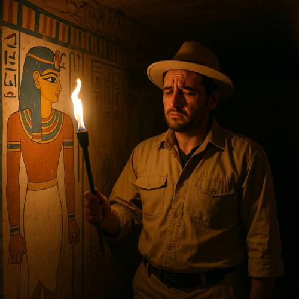
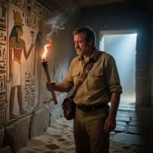
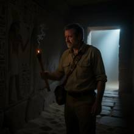

World Knowledge — An Egyptian archaeologist stood in the pyramid tomb, but the torch in
An Egyptian archaeologist stood in the pyramid tomb, but the torch in his hand did not illuminate the mural. His face was full of disappointment.

Direct — one call, no iterationContinuum — Kimi K3 + Qwen-Image
Judge — Direct
PASSWorld Knowledge — The image depicts a man dressed in attire consistent with an archaeologist, including a khaki shirt and a fedora-style hat. He is in a dark, stone-walled chamber. On the wall, there is a prominent mural painted in the style of ancient Egyptian art, featuring a figure and hieroglyphs, which aligns with the description of a pyramid tomb.
FAILGrammar - Negation — The prompt states that the torch 'did not illuminate the mural.' In the image, the man is holding a lit torch, and the light from the flame is clearly cast upon the mural, making it brightly visible. This directly contradicts the negative requirement in the prompt.
Judge — Continuum
PASSWorld Knowledge — The image features a man who appears to be an archaeologist, based on his khaki clothing and leather satchel. He is standing in a stone-walled corridor with sand on the floor. On the wall to his left, there are visible Egyptian-style paintings and hieroglyphs, consistent with the description of a 'mural' in a 'pyramid tomb'.
PASSGrammar - Negation — The man holds a lit torch, but the flame is small and emits very little light. The mural on the wall next to the torch is dark and not brightly lit, appearing mostly in shadow. This visually represents the negative phrase 'did not illuminate the mural'.
What the agent did
Thinking
Let me analyze this prompt. The user wants an image of: - An Egyptian archaeologist standing in a pyramid tomb - Holding a torch that does NOT illuminate the mural (torch is lit perhaps but failing, or the flame is weak/dead — the mural remains dark) - His face full of disappointment This is a somewhat paradoxical/challenging scene: a torch that doesn't illuminate. I need to convey: torch in hand (maybe weak/sputtering flame or smoke), the mural on the wall remains dark/unlit, and the archaeologist's face shows disappointment. I must use qwen-image for generation. No seed. Omit steps/guidance. Let me craft a detailed visual prompt: - Interior of an ancient Egyptian pyramid tomb, stone walls covered with hieroglyphic murals barely visible in darkness - A middle-aged male archaeologist in early-20th-century attire (khaki shirt, satchel, hat maybe) - Holding a wooden torch whose flame is dying/sputtering out, only a faint ember or thin smoke, casting almost no light - The mural on the wall in front of him remains shrouded in darkness, unlit - His face clearly visible (perhaps lit by a faint ambient cold light or his flashlight?) showing disappointment — frown, drooped shoulders Wait — the paradox: if torch gives no light, how is his face visible? I can add faint cool ambient light from a shaft or a lantern glow... but the prompt says torch did not illuminate the mural. Perhaps there's some dim ambient light (moonlight shaft, or his helmet lamp?) Actually simpler: cinematic dim ambient lighting from a doorway/beam of light, torch nearly burnt out with wisps of smoke. His face shows disappointment. Let me write the prompt with concrete visual details: "Inside an ancient Egyptian pyramid tomb: a male archaeologist in a khaki expedition outfit and leather satchel stands before a stone wall covered in faded hieroglyphic murals. He holds a wooden torch whose flame has died down to a faint orange ember with a thin wisp of smoke, giving off almost no light, so the mural remains shrouded in darkness, barely visible. A weak shaft of pale daylight from a corridor behind him dimly reveals his face, which is full of disappointment — furrowed brows, downturned mouth, shoulders slumped. Dust in the air, sand on the stone floor, cinematic, realistic, moody." That fills in visual detail implied. Good. Then inspect, especially the torch and face and whether the mural is dark. Possibly zoom on face to check disappointment expression. Let me generate.
Step 1 — `generate_image`
{
"prompt": "Inside a dark ancient Egyptian pyramid tomb, a middle-aged male archaeologist in a dusty khaki expedition shirt with a leather satchel stands before a stone wall covered in faded hieroglyphic murals. He holds a wooden torch in his hand whose flame has died to a tiny sputtering orange ember with a thin wisp of smoke, giving off almost no light \u2014 the mural on the wall stays shrouded in darkness, barely visible in the gloom. A weak shaft of pale light from a passage behind him dimly reveals his face, which is full of disappointment: furrowed brows, downturned mouth, slumped shoulders. Dust hangs in the air, sand covers the stone floor, realistic cinematic photograph, moody low-key lighting.",
"model": "qwen-image"
}
Result img_0

Thinking
The image is quite good. Let me check against the prompt: - Egyptian archaeologist in pyramid tomb: yes. - Torch in hand: yes, but the flame is still burning fairly strongly, and the mural to the left IS actually somewhat illuminated/visible. The prompt says the torch did NOT illuminate the mural. Here the mural on the left is quite visible and colorful. The flame looks like a decent flame. - Face full of disappointment: his face looks sad/dejected, looking down. That reads reasonably. Key miss: the mural is well lit and colorful; the torch flame looks functional. The intent: torch fails to illuminate the mural — mural should be in darkness. The paradox: a burning flame that doesn't cast light on the mural. Options: make the mural wall behind/in front of him pitch dark while torch flame is tiny/weak ember. Or keep the flame but show the mural wall dark as if the light doesn't reach it (mysteriously). The prompt says "the torch in his hand did not illuminate the mural" — so the mural should remain dark/unlit despite the torch. Currently the mural is bright and colorful. I should edit: make the mural wall shrouded in darkness, barely visible; shrink the flame to a weak sputtering ember. Let me do an edit: "Shrink the torch flame to a tiny dying ember with thin smoke, and plunge the mural wall into deep darkness so the hieroglyphic paintings are barely visible, as if the torchlight cannot reach them; keep the man and his disappointed expression unchanged." One change per call is recommended... Actually it's arguably two changes (flame + mural darkness), but they're tightly linked causally. I could do one edit: "the torch's flame shrinks to a weak sputtering ember and its light no longer reaches the mural, which becomes shrouded in darkness, barely visible." That's a single conceptual change: torch fails to light the mural. Let me try that edit with qwen-image.
Step 2 — `edit_image`
{
"image": "img_0",
"prompt": "Shrink the torch flame to a tiny weak sputtering orange ember with a thin wisp of smoke, and make its light fail to reach the mural: the hieroglyphic paintings on the wall become shrouded in deep darkness, barely visible in the gloom, while the man's figure and disappointed expression stay dimly lit by the pale light from the doorway.",
"model": null
}
Result img_1

Thinking
This edit worked well. Now: - The torch flame is a tiny weak ember with a wisp of smoke. - The mural on the left wall is now shrouded in darkness, barely visible. - The man is dimly lit by the pale doorway light; his face still shows disappointment (brows furrowed, mouth downturned, looking at the mural in the dark). The image got darker overall but the man is still visible. Composition remains good. Let me inspect the face region to confirm disappointment is readable. The face at full scale looks downturned and sad. Maybe a quick crop to verify expression quality.
The face crop shows a clearly disappointed/dejected expression: furrowed brows, downturned mouth, heavy gaze toward the dark mural. All requested elements are present and correct: 1. Egyptian archaeologist in a pyramid tomb ✓ 2. Torch in hand ✓ 3. Torch does not illuminate the mural — the mural is shrouded in darkness ✓ 4. Face full of disappointment ✓ Mark img_1 as best and stop. Good enough is a stop condition.
Model
The close-up confirms a clearly dejected expression — furrowed brows, downturned mouth, a heavy gaze toward the darkened wall. Every element of the prompt is now present and correct.
Step 4 — `mark_best`
{
"image": "img_1",
"reason": "All requested elements present and correct: archaeologist in pyramid tomb, torch reduced to a weak sputtering ember that fails to illuminate the now-dark mural, and a clearly disappointed expression lit by the pale doorway light."
}
Thinking
Done. Summarize for the user.
Model
The image is complete and marked as the final result. **What's in the scene:** - A weathered archaeologist in a dusty khaki expedition shirt and leather satchel stands inside a stone pyramid tomb - The torch in his hand has dwindled to a tiny sputtering ember with a thin wisp of smoke — its light fails to reach the wall, leaving the hieroglyphic mural shrouded in deep darkness, barely visible - His face, dimly lit by the pale light spilling from the passage behind him, carries a heavy, disappointed expression — furrowed brows and a downturned mouth as he stares at the mural he cannot see The first attempt rendered the mural brightly lit by a healthy flame, which contradicted the prompt's key paradox, so I edited it to kill the torch's reach and plunge the wall into gloom while keeping the figure readable via the doorway light.